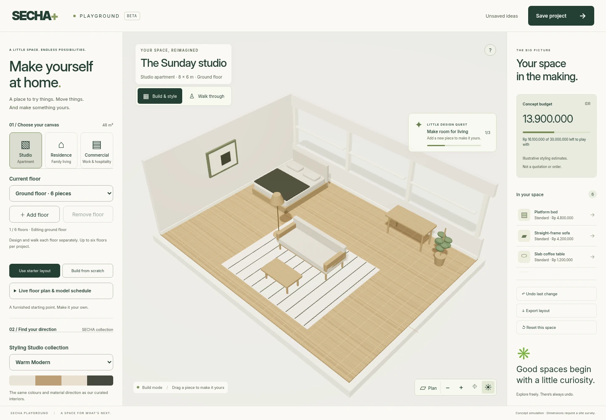

SECHA turns renovation from a one-off project into a product customers
can choose, shape and bring to life.
01 / THE MANIFESTO
The world doesn’t just need more space. It needs better ways to
make it.
Making a space should be considered, personal and clear. Today,
renovation asks customers to buy uncertainty: an evolving brief, a
moving price and a finish line that keeps changing.
We believe in freedom in the choices, clarity in the commitment and
discipline in the delivery. The ambition is not to make every space
the same. It is to make the system behind each space repeatable.
US$300KProject value served to date
30%Target package gross margin
40%Faster modular delivery, reported
Company-reported figures from SECHA’s 2026 business update. Project
value is not recognised revenue. The 30% margin is a target, not
realised performance. The delivery improvement has not been
independently verified; its underlying measurement baseline was not
supplied.
Josephine Lovensa Founder & CEO / SECHA · Jakarta, Indonesia
SECHA02 / PRODUCT & OPERATING MODEL
The interface is already taking shape.
Studio+ lets customers explore a room, change material directions, place
furniture and walk through their ideas. The public playground supports
studio, residential and commercial spaces, floor controls, saved layouts
and export.

Actual public Studio+ source rendered locally. Concept layouts and
budgets are illustrative. This is a design tool, not evidence of live
quotation, financing or fulfilment integrations.
The operating thesis
Turn customer intent into one controlled job file: scope, bill of
materials, supplier allocation, installer sequence and quality
proof.
The physical engine
GX-100 factory-prepared snap panels standardise the shell, furniture
and installation sequence. Software defines the promise; the
physical system fulfils it.
A US$5,000 package is designed to produce US$1,500 in gross profit.
Fixed scope controls price, GX-100 controls time, and the interface
controls changes. Financing supports affordability and conversion.
Target unit economics / per package
US$
Package value
5,000
Fulfilment cost / 70%
3,500
Target gross profit / 30%
1,500
Illustrative scale case, not a forecast: 10,000 annual packages at
US$5,000 = US$50M project value and US$15M gross profit if the 30%
target margin is achieved. Gross profit excludes operating expenses.
Distribution
Property agents and banks are the proposed demand channels. The
SECHA menu converts intent into packages, fulfilled through the
GX-100 network.
The next milestone
Productise founder-led projects into measurable package throughput:
quote velocity, conversion, cycle time, gross margin and referral.
Raising US$1M.
Planned use of funds
Allocation
Product / interface + job-file control
45% · US$450K
GX-100 / modular delivery
35% · US$350K
Distribution / agent + bank channels
20% · US$200K
THE FOUNDER
Josephine Lovensa
Founder & CEO / SECHA
Second-time founder with scale-up experience and an exit. More than
five years consulting on infrastructure projects across APAC. PropTech
CEO of the Year 2026 — APAC Insider.
This memo summarises the supplied business update and public product
source. No valuation, investment terms, committed pipeline or
independent financial verification was provided.